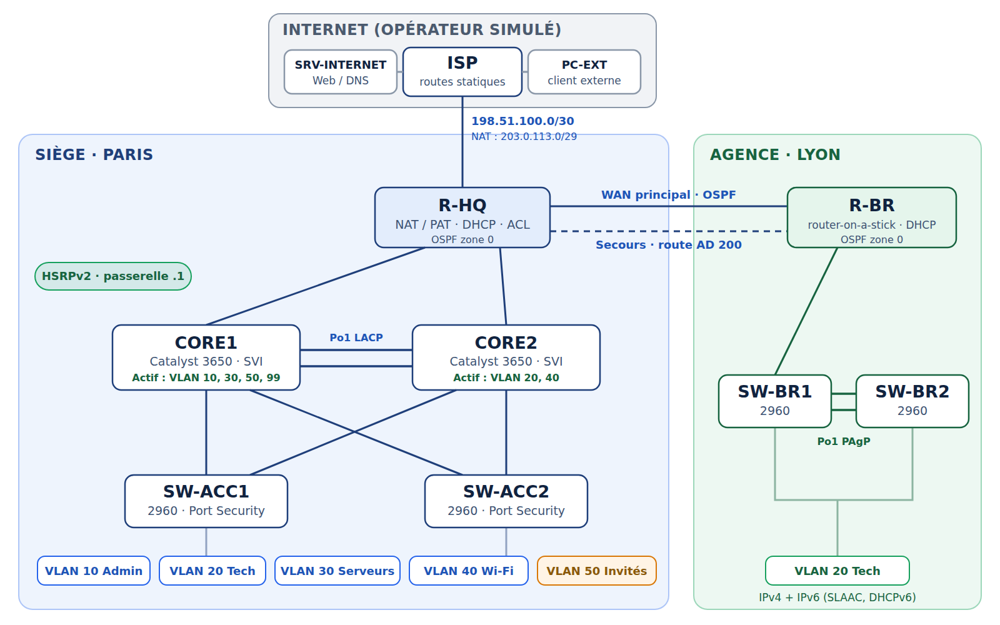

Réseau d’entreprise multisite redondant et sécurisé
Laboratoire Cisco Packet Tracer Force.LAB : un siège à Paris, une agence à Lyon et un accès Internet, configurés entièrement en ligne de commande puis validés par une recette de 12 tests, dont des coupures réelles d’un cœur de réseau et du lien WAN principal.

Un réseau CCNA complet, pas des labs isolés
L’objectif était de réunir dans un seul réseau cohérent les notions du programme CCNA 200-301. Le projet a été mené en 15 phases, chacune donnée sous forme de cahier des charges sans les commandes : j’ai écrit chaque configuration, vérifié chaque fonction avec les commandes show, puis testé de bout en bout avant de passer à la suite.
Commutation
VLAN, trunks 802.1Q avec VLAN natif dédié, EtherChannel LACP et PAgP, Rapid PVST+ aligné sur les passerelles HSRP.
Redondance
Deux cœurs Catalyst 3650 en HSRPv2 avec partage de charge, double liaison WAN avec route statique flottante.
Routage
Inter-VLAN par SVI au siège et router-on-a-stick à l’agence, OSPFv2 en zone 0 avec interfaces passives, OSPFv3 pour IPv6.
Services IP
DHCP centralisé avec relais, DNS interne et public, PAT pour les utilisateurs et NAT statique pour publier le serveur web.
Sécurité
SSH v2 filtré par ACL, ACL anti-usurpation sur Internet, DHCP snooping, Port Security, Wi-Fi invité isolé.
IPv6 et supervision
SLAAC au siège, DHCPv6 sans état à l’agence, horloge NTP et journaux Syslog centralisés sur un serveur.
Configurations et tests, preuve par preuve
Les preuves sont regroupées par thème. Les sorties de commandes sont reprises telles qu’elles s’affichent sur les équipements ; les mots de passe et la clé Wi-Fi sont masqués.
1. Architecture et redondance
Maquette Packet Tracer en trois zones
Le siège est construit autour de deux cœurs reliés à chaque switch d’accès ; l’agence est reliée par deux liaisons série. Chaque VLAN a son /24, avec la passerelle toujours en .1.
- Siège : VLAN 10 Admin, 20 Tech, 30 Serveurs, 40 Wi-Fi salariés, 50 Wi-Fi invités, 99 Management
- Agence : VLAN 20 et 99 derrière R-BR
- Adresses publiques prises dans les plages de documentation
CORE1#show standby brief
P indicates configured to preempt.
Interface Grp Pri P State Active Standby Virtual IP
Vl10 10 110 P Active local 10.10.10.3 10.10.10.1
Vl20 20 100 P Standby 10.10.20.3 local 10.10.20.1
Vl30 30 110 P Active local 10.10.30.3 10.10.30.1
Vl40 40 100 P Standby 10.10.40.3 local 10.10.40.1
Vl50 50 110 P Active local 10.10.50.3 10.10.50.1
Vl99 99 110 P Active local 10.10.99.3 10.10.99.1Passerelles redondantes HSRPv2
Chaque VLAN a une adresse virtuelle .1 portée par l’un des deux cœurs. La charge est partagée et la racine Spanning Tree de chaque VLAN est le cœur actif HSRP, pour que le trafic ne fasse aucun détour.
- CORE1 actif pour les VLAN 10, 30, 50 et 99
- CORE2 actif pour les VLAN 20 et 40
- Préemption : le cœur prioritaire reprend son rôle à son retour
R-HQ#show ip ospf neighbor Neighbor ID Pri State Dead Time Address Interface 10.255.255.2 1 FULL/DR 00:00:35 10.0.0.2 GigabitEthernet0/1 10.255.255.3 1 FULL/DR 00:00:35 10.0.0.6 GigabitEthernet0/2 10.255.255.4 0 FULL/ - 00:00:30 10.0.0.10 Serial0/3/0 R-BR : ip route 0.0.0.0 0.0.0.0 10.0.0.13 200
OSPF et WAN de secours
R-HQ forme trois voisinages : les deux cœurs et l’agence par le WAN principal. Le WAN de secours reste hors d’OSPF et porte une route statique flottante, qui n’entre en jeu que si le lien principal tombe.
- Router-id fixé sur Loopback0, interfaces passives par défaut
- Route flottante en distance administrative 200, au-dessus d’OSPF (110)
- Testé : S0/3/0 coupée, l’agence passe par S0/3/1
2. Services IP et accès Internet
DHCP centralisé avec relais
Tous les pools du siège sont sur le routeur R-HQ. Les SVI des cœurs relaient les requêtes vers sa loopback, joignable par les deux cœurs ; l’agence garde un pool local pour rester autonome.
- PC-TECH1 obtient 10.10.20.23
- Passerelle : l’adresse virtuelle HSRP 10.10.20.1
- DNS : le serveur interne 10.10.30.10
Publication du serveur web par NAT statique
Un poste situé sur Internet ouvre www.force.lab : le DNS public renvoie l’adresse 203.0.113.5, que R-HQ traduit vers le serveur interne SRV-WEB.
- NAT statique 10.10.30.10 vers 203.0.113.5
- PAT sur le pool 203.0.113.1 à .4 pour les utilisateurs
- ACL anti-usurpation en entrée sur l’interface Internet
3. Sécurité, Wi-Fi et supervision
Wi-Fi salariés et invités séparés
Deux SSID dans deux VLAN distincts. Les invités sont isolés par l’ACL GUEST-ISOLATION, appliquée en entrée du VLAN 50 sur les deux cœurs : ils sortent sur Internet mais n’atteignent aucun réseau interne.
- FORCELAB-STAFF en VLAN 40, FORCELAB-GUEST en VLAN 50
- WPA2-PSK avec chiffrement AES, canaux 6 et 11
- Testé : l’invité atteint Internet, pas le serveur interne
Sécurisation des équipements et des ports
Chaque équipement exige un compte local et n’accepte l’administration à distance qu’en SSH v2, depuis les seuls VLAN Admin et Management. Les ports d’accès sont protégés contre les branchements non prévus.
- ACL standard sur les lignes VTY
- Port Security en sticky, DHCP snooping, BPDU Guard
- Testé : un portable branché à la place du serveur met le port en err-disabled
Journaux centralisés et horodatés
Tous les équipements envoient leurs journaux à SRV-INFRA et y prennent l’heure par NTP. Les premières lignes datent de 1993, l’horloge par défaut avant la synchronisation, ce qui montre pourquoi le NTP est indispensable pour corréler des événements.
- logging et ntp server vers 10.10.30.20
- Chaque message identifie l’équipement émetteur
- LLDP activé en complément de CDP
Des pannes réellement provoquées
La recette a été écrite avant les tests : accès aux services par nom, sortie Internet des deux sites, isolement des invités, filtrage SSH, IPv6 sans NAT, Port Security et journaux. Les 12 tests ont donné le résultat attendu.
Ce que le projet m’a appris à diagnostiquer
Plusieurs incidents ont été résolus pendant la construction : conflits d’adresses HSRP entre les versions 1 et 2, routage inter-VLAN oublié sur un cœur, EtherChannel suspendu par un mauvais ordre de configuration, postes en 169.254 à cause de l’option 82 du DHCP snooping, et IPv6 perdu une fois sur deux tant que CEF était désactivé. Le contrôleur Wi-Fi prévu au départ saturait Packet Tracer ; il a été remplacé par deux points d’accès autonomes qui offrent le même service aux utilisateurs.
Consulter le projet en détail
La documentation complète présente l’architecture, le plan d’adressage, les choix de conception, les configurations, la recette et le dépannage du réseau Force.LAB.